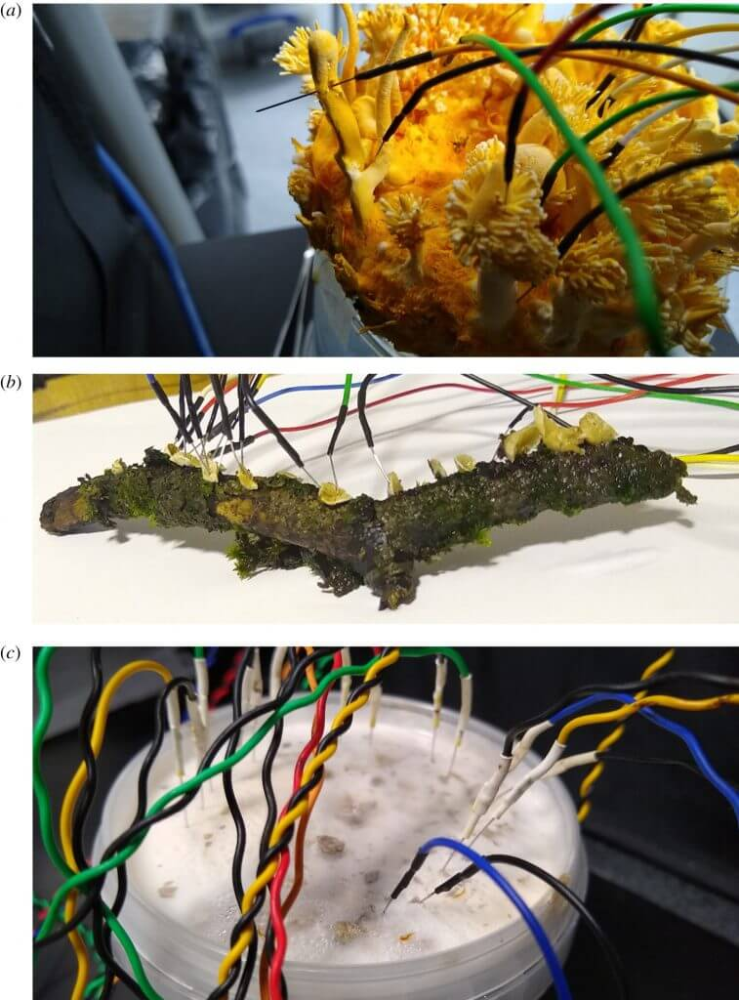
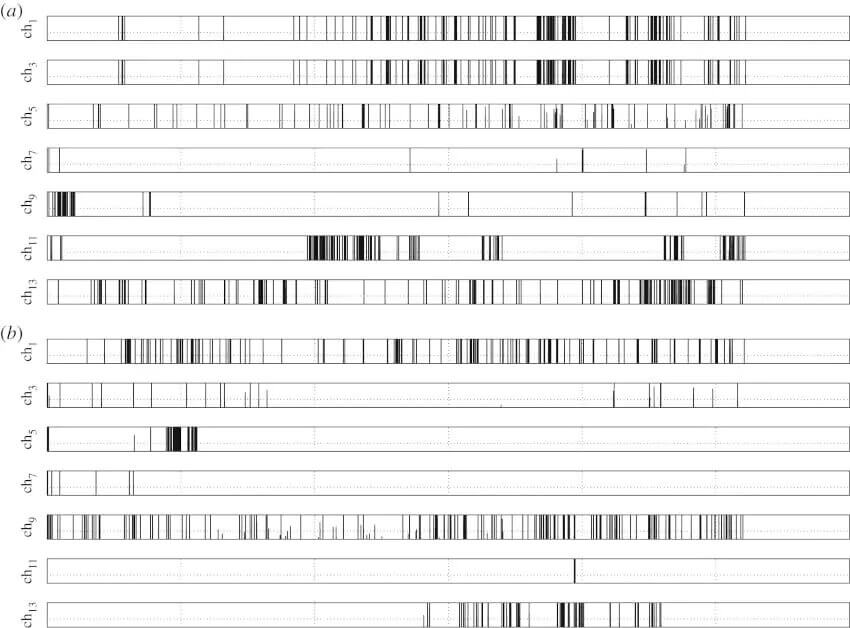

အစောပိုင်း သုတေသန ပြုချက်တွေ အရ မှိုတွေဟာ အချင်းချင်း အကြား ဆက်သွယ်မှု တွေကို သဘာဝ လျှပ်စစ် ဓါတ်အားကို အသုံးပြုပြီး ဆက်သွယ်ကြတယ် ဆိုတာကို တွေ့ရှိ ခဲ့ကြပါတယ်။ မှိုတွေဟာ အချင်းချင်းကြား ချိတ်ဆက်ထားတဲ့ လက်တံ တွေကတဆင့် လျှပ်စစ် အချက်ပြ တွေကို ပေးပို့ ဆက်သွယ် ကြတာကို တွေ့ခဲ့ ရတာပါ။
ဒီလို လျှပ်စစ် ဓါတ်အားသုံး ဆက်သွယ်မှုဟာ တိရိစ္ဆန် တွေရဲ့ အာရုံကြော တွေထဲက ဆက်သွယ်မှု သဘော သဘာဝနဲ့ ခပ်ဆင်ဆင် တူပါတယ်။ ဒါပေမယ့် တိရိစ္ဆာန် တွေနဲ့ မတူတာက မှိုတွေကြားက အချက်ပြ ဆက်သွယ်မှု တွေက သီးခြားစီ ဖြစ်နေတဲ့ မှိုတွေ ကြားမှာ အချင်းချင်း ဆက်သွယ်မှု ဖြစ်နေတာပါ။
သိပ္ပံ ပညာရှင် တွေဟာ ဒီ သဘာဝကို သစ်သားစား မှို တမျိုးမှာ အထူးပြု လေ့လာ ခဲ့ကြပါတယ်။ ဒီအခါ ဒီ မှိုတွေ သစ်သားနဲ့ ထိမိတဲ့ အခါ သူတို့က ထွက်တဲ့ လျှပ်စစ် အချက်ပြ တွေဟာ တစ်ပင်က တစ်ပင် ပြန့်နှံ့တဲ့ နှုန်းက ပိုပြီး မြန်လာတာကို တွေ့ခဲ့ ကြရပါတယ်။
ဒီ အချက်က ဘာကို ပြနေလဲ ဆိုတော့ မှိုတွေဟာ သူတို့ တွေ့ရှိရတဲ့ “အစာ” နဲ့ ပါတ်သက်တဲ့ သတင်း အချက်အလက် တွေကို အချင်းချင်းကြား မျှဝေ ပေးနိုင် ကြတယ်လို့ သိပ္ပံ ပညာရှင် တွေက ယုံကြည် ကြပါတယ်။
ဒီ့အရင် သုတေသန တွေအရလဲ ပန်းရောင် Pleurotus djamor မှိုမျိုးကနေ လျှပ်စစ် အချက်ပြလှိုင်း နှစ်မျိုးကို ထုတ်ပေးနိုင် တာကို တွေ့ခဲ့ကြ ပါတယ်။ ဒီ အချက်ပြ လှိုင်း နှစ်မျိုးကို ပန်းရောင်မှိုဟာ မတူညီတဲ့ ကြိမ်နှုန်း (frequency) နှစ်မျိုးကနေ ထုတ်လွှတ်ပေးတယ် ဆိုတာကိုလဲ တွေ့ခဲ့ကြပါတယ်။
အခြားသော သုတေသန အများအပြားကလဲ မှိုတွေဟာ သူတို့ကို လာပြီး လှုံဆော်တဲ့ လှုံ့ဆော်မှု အမျိုးမျိုး အလိုက် မတူညီတဲ့ လျှပ်စစ် အချက်ပြ လှိုင်းတွေ ထုတ်ပေးတယ် ဆိုတာ တွေ့ခဲ့ ကြပါတယ်။ အပေါ်မှာ ပြောသလို လူသားတွေရဲ့ အာရုံကြောမှာ ဖြစ်ပေါ်တဲ့ သဘာဝ လျှပ်စစ် လှိုင်း ထုတ်လွှင့်မှု တွေနဲ့ အလားသဏ္ဍာန် တူတဲ့ လျှပ်စစ် အချက်ပြ လှိုင်းတွေကို ထုတ်ပေးတာ ဖြစ်ပါတယ်။
သုတေသန တွေကနေ ရှာဖွေ တွေ့ရှိ မှုတွေအရ မှိုတွေဟာ ဒီလို အချင်းချင်းကြား လျှပ်စစ် အချက်ပြ ဆက်သွယ် မှုတွေကို hyphae လို့ ခေါ်တဲ့ အမျှင်တန်းတွေကို အသုံးပြုပြီး ဆက်သွယ် ကြတယ်လို့ ဆိုပါတယ်။

ဒီလို လျှပ်စစ် အချက်ပြ လှိုင်းတွေ ဖမ်းယူနိုင်ဖို့ မှိုတွေထဲကို လျှပ်စစ် ဓါတ်အားတိုင်း သတ္တုအပ်တွေ ထိုးစိုက်ပြီး လေ့လာ ခဲ့ကြပါတယ်။
ဒီလို လေ့လာတဲ့ အခါမှာ ဖမ်းယူ ရရှိတဲ့ လျှပ်စစ် အချက်ပြ ဆက်သွယ်မှု တွေဟာ လူသားတွေ စကားပြောတဲ့ အသွင်သဏ္ဍာန် လက္ခဏာ တွေနဲ့ တူညီမှု ရှိနေတဲ့ အချက်တွေကို တွေ့ရှိ ခဲ့ကြပါတယ်။
ဥပမာ အနေနဲ့ဆို စကား အများဆုံး ပြောတဲ့ အချိန်မှာ အချို့ မှိုတွေဟာ စကားလုံး ၅၀ လောက် အထိ ပြောကြတာကို ပညာရှင်တွေ တွေ့ရှိ ခဲ့ပါတယ်။ အထူးသဖြင့် Splitgill မှို အမျိုးအစားဟာ စကား အများဆုံး ဆိုတာကို တွေ့ရှိခဲ့ ကြပါတယ်။

“ဒီ မှိုတွေရဲ့ hyphae လက်တံ တွေမှာ ဖြစ်ပေါ်တဲ့ လျှပ်စစ် အချက်ပြ လှိုင်းတွေနဲ့ လူတွေရဲ့ စကား ကြားထဲ ဆက်စပ်မှု ရှိမရှိ ဆိုတာ ကျွန်တော်တို့ သေချာပေါက် မပြောနိုင်ပါဘူး” လို့ အခု သုတေသနကို ဦးဆောင်သူ ပါမောက္ခ အင်ဒရူး အဒါမန်းစကီး (Professor Andrew Adamatzky) က ပြောပါတယ်။
ဒါပေမယ့် ဒီ လျှပ်စစ် အချက်ပြ လှိုင်းတွေကို သေခြာ လေ့လာကြည့်ရင် သူတို့ဟာ ဖြစ်ချင်သလို ဖြစ်နေတာမျိုး မဟုတ်တာကို တွေ့ကြရ ပါတယ်။ သူတို့ ထွက်ပေါ်လာတဲ့ ပုံဟာ စနစ် ကျနေတာ တွေ့ကြရ မှာပါ။ ဒါ့ကြောင့် ပညာရှင် တွေက ဒီ လျှပ်စစ် အချက်ပြ လှိုင်း တွေမှာ လုပ်ငန်းဆောင်တာ တစ်ခုခုတော့ ရှိလိမ့်မယ်လို့ ယူဆ ကြပါတယ်။
အခုအချိန် ထိတော့ မှိုတွေဟာ ဒီ လျှပ်စစ် အချက်ပြလှိုင်း တွေကို အသုံးပြုပြီး စကားပြော နိုင်တဲ့ “မှို ဘာသာစကား” တစ်မျိုးမျိုး ရှိတယ်လို့ ပြောဖို့ကတော့ စောလွန်း ပါသေးတယ်။ ဒါပေမယ့် သု့တေသီ တွေကတော့ သိပ်မကြာ တော့တဲ့ အနာဂါတ်မှာ ဒီ လျှပ်စစ် အချက်ပြလှိုင်းတွေ ထွက်လာအောင် ဘယ်လို အရာတွေက လှုံဆော်ပေးလဲ ဆိုတာနဲ့ မှိုတွေဟာ ဒီ လျှပ်စစ် အချက်ပြ တွေကို အသုံးပြုပြီး အချင်းချင်း စကား ပြောမပြော ဆိုတာတွေကို ရှာဖွေ နိုင်လိမ့်မယ်လို့ ယုံကြည် ကြပါတယ်။
Reference: Scientists Discover Fungi Have Their Own Language, and It’s Complex | Curiosmos